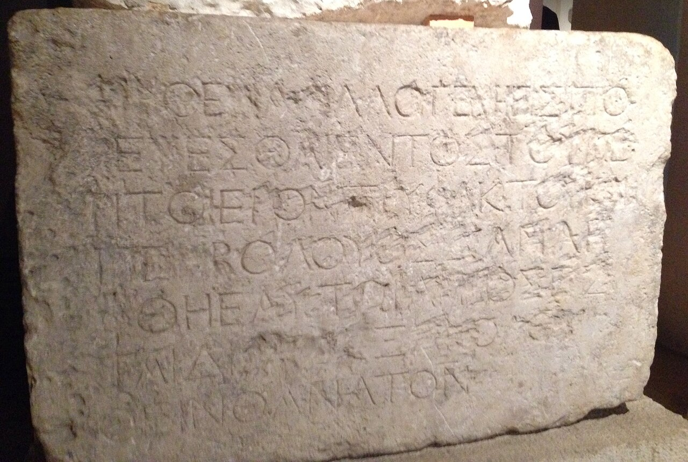

Temple Warning Inscription

- Find Name
- Temple Warning Inscription
- Alternative Names
- Soreg Inscription
- Historical Period
- Roman
- Artifact Date
- 1st century BC - AD 70
- Date Discovered
- 1871
- Discovery Location
- Temple Mount Area, Jerusalem, Israel
- Current Location
- Istanbul Archaeology Museums, Turkey
- Timeline Era
- Life of Christ
- Description
- A Greek inscription from the balustrade (soreg) around Herod's Temple warning Gentiles, on pain of death, not to pass beyond into the inner courts. A complete example was found in 1871, and a second fragment is held in Jerusalem.
- Biblical Significance
- Paul was accused of bringing a Gentile past this very barrier, and Ephesians speaks of Christ breaking down the dividing wall of hostility. The stone makes that barrier literal, and therefore makes the gospel's welcome to the nations, Jew and Gentile together in Christ, all the more glorious.
- Evidence Class
- Direct
- Interpretations
- Scholars agree the warning inscription stood on the Temple balustrade, matching Josephus’s description and the charge against Paul in Acts 21 — a Gentile crossing it faced death.
- Scripture Illuminated
- Related People
- Related Books
- Related Places
- Related Events
Awaiting Review Not yet checked against scholarly sources. Treat its claims as provisional until this entry is reviewed. About verification
Last reviewed: not yet reviewed